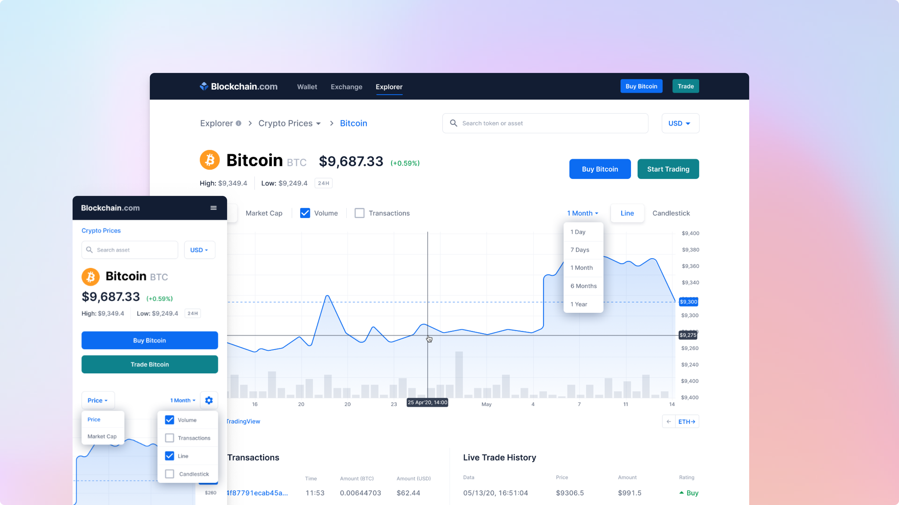

Blockchain.com explorer is the oldest crypto explorer with over 12 million visitors a month. It was built by engineers and barely touched by designers due to its complexity.
My job was to restructure and consolidate all the explorer properties, improve navigation and optimize its main pages for retention.
UI/UX design, Wireframing, Design System
Figma | Whimsical
Blockchain.com made its name by creating the first Bitcoin blockchain explorer in 2011. By 2020, their explorer not only displayed network transactions but also had charts for savvy users and price data for all available cryptocurrencies.
When I joined Blockchain, my first project was to redesign the entire explorer homepage and its subpages such as the block page, transaction page, and prices.
Ensure brand consistency across all explorer products, restructure and consolidate explorer properties, make navigation to other properties more intuitive, improve front-end pages to optimize for conversion, and increase ad revenue.
The explorer is used by all kinds of users, from anyone new to crypto wanting to confirm their transaction, to very technical and crypto savvy users that are looking for detailed metadata to inform them about the current status of the network, specifically for Bitcoin, Ethereum, and Bitcoin Cash.
As my first step, I wanted to take the time to understand how each area of the explorer was structured and tried to find patterns or common areas where I could connect them. The main pages included:
Looking at other products from Blockchain it became clear that the page needed to look clean, while still displaying a lot of information. The final product focused on the explorer's main page as the main navigation place. Users would land there and get a summary of everything the explorer has to offer. This also allowed an opportunity to upsell other Blockchain products.
As part of the retention strategy, the explorer pages also offered a high level of interactivity to the advanced user, dropdowns, coin discovery, a search engine for blocks, transactions and addresses, and an advanced view of charts. A lot of these interactive UI elements had to be designed from stratch or redesigned, which were later added to the design system to be included throughout other areas of the site.
With these changes, search usage improved from 9.5% to 12%. The drop-off rate went down from 40% to 30%. Improve click-through rate to Exchange product from 0.13% to 0.76%, and increased ad revenue (undisclosed figure).
© 2024 • Bettsina Walkinson • Bettsinawalks